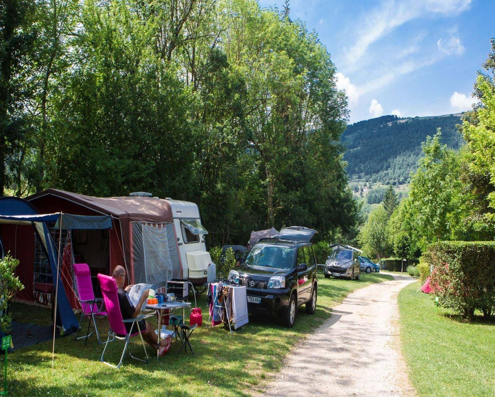
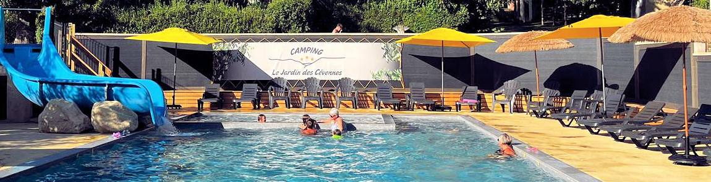
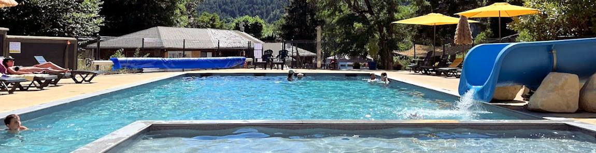
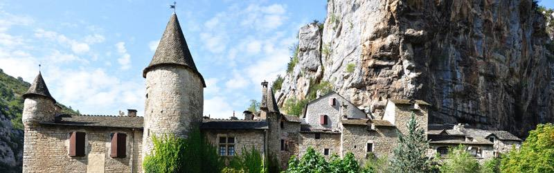
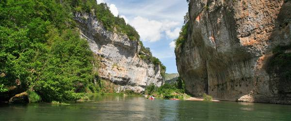
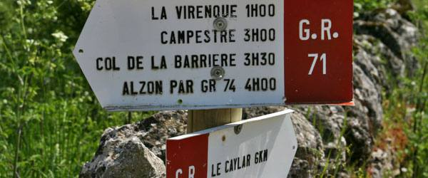
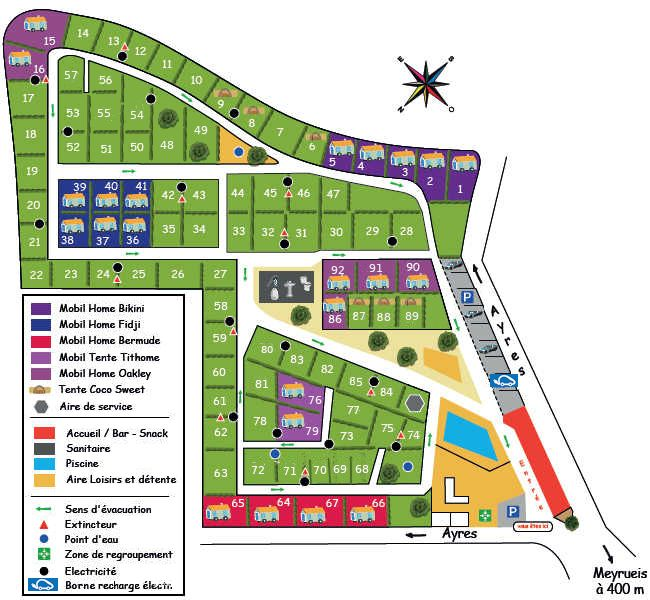

Au pied des Causses, à cinq minutes à pied de Meyrueis
63 emplacements ombragés, 29 mobil-homes et tentes équipées, une piscine chauffée toute neuve. Fabien et Sonia vous accueillent depuis 2024, à 100 m de la Jonte et de la Brèze.

Canicule annoncée ? Prenez de l'altitude. −20 % sur les locations disponibles du 11 au 18 juillet. Offres couple : mobil-home Bikini à 240 € la semaine, Oakley à 280 €.
Voir les disponibilitésChoisir son abri
Six modèles de locations, tous équipés (cuisine, couvertures, oreillers, terrasse), et 63 emplacements de 95 m² en moyenne. Touchez une ligne pour tout voir : photos, plan, prix 2026.


La piscine a rouvert
Après des mois de travaux, elle est entièrement rénovée : un grand bassin pour toute la famille, une pataugeoire sécurisée pour les petits, et le toboggan préféré des enfants, toujours là.
- Chauffée à 26 °C environ, comprise dans tous les forfaits
- Pataugeoire sécurisée pour les tout-petits
- Toboggan, transats et parasols
- Slip de bain obligatoire : les shorts et bermudas ne sont pas acceptés
- Wi-Fi gratuit partout dans le camping depuis 2025, piscine comprise
Un camping à taille humaine
92 emplacements en tout, sur l'ancien « Champ d'Ayres », côté château d'Ayres : le café se prend sous l'acacia, et les cartes IGN se vendent à la réception.
- Terrasse à l'ombre d'un acacia : petit-déjeuner, verre, glace à toute heure
- Bar : bières pression et artisanales de Lozère, cafés, jus, restauration rapide
- Pain et viennoiseries à la réception, petite épicerie du quotidien
- Bloc sanitaire neuf depuis 2021, espace bébé, lave-linge et sèche-linge
- Aire de jeux, ping-pong, baby-foot, jeux vidéo, terrain de pétanque
- Barbecue collectif au charbon ; barbecue à gaz, frigo et draps à louer
- En juillet-août : soirées deux fois par semaine (repas, loto, karaoké, quiz) et animations de jour
- À la réception : infos touristiques, guides, cartes IGN, réservation de vos sorties (canoë, rafting, escalade, grottes…)
- Camping accessible aux personnes à mobilité réduite, sauf la piscine et les mobil-homes
- Aire de service camping-car (remplissage, vidange)
Ce qu'en disent les campeurs
Lire tous les avis sur Camping2Be
Accueil noté 9,5 sur 10. Les campeurs parlent surtout du calme, de la piscine et de la disponibilité de Fabien, Sonia et leurs filles.
« Nous avons apprécié l'accueil, la disponibilité des hôtes, la proximité du village, le calme du camping et la piscine. Merci à Fabien, Sonia et leurs filles pour ce très bon séjour. »
Thierry F. · mobil-home Bermudes · août 2026
« Accueil, environnement, disponibilité des responsables qui sont au top pour donner des renseignements sur les balades et animations. Une belle piscine bien agréable au retour de balades. »
François T. · mobil-home Bikini · septembre 2026
« Le calme, la situation du camping, la disponibilité des responsables, la piscine nickel. »
Denis S. · Oakley · septembre 2026
« Camping au top. Silencieux, très agréable. »
Vincent J. · emplacement confort · octobre 2026
Trois rivières, deux parcs, un village
Meyrueis, station verte à 700 m d'altitude, est au carrefour des gorges, des causses et de l'Aigoual. On part à pied, à vélo, en canoë, et le soir on revient au frais.



Votre emplacement vous attend
Réservation en ligne sécurisée, ou par téléphone au 04 66 45 60 51.
Nos locations
6 Coco Sweet, 21 mobil-homes et 2 Tithome, de 2 à 6 personnes, dans la verdure, avec piscine chauffée, aire de jeux, pétanque, ping-pong et Wi-Fi. Tous équipés : plaques de cuisson, vaisselle, réfrigérateur, couvertures, oreillers, table de jardin et terrasse.
Le forfait location comprend
- L'électricité, le gaz et l'eau
- Un véhicule
- L'accès à la piscine (slip de bain obligatoire)
- Couvertures et oreillers (draps et serviettes non fournis)
Options
- Paire de draps jetables : 8,50 €
- Barbecue / réchaud à gaz 2 en 1 : 14 € la semaine, 2,50 € la journée
- Lit bébé : 17 € la semaine · chaise haute : 17 € la semaine
- Assurance annulation : remboursement en cas d'imprévu avant ou pendant le séjour
Conditions
- Hors saison : 2 nuits minimum, arrivée libre
- Juillet-août : 7 nuits minimum, du samedi au samedi
- Remise des clés à partir de 15 h 30, départ avant 11 h après l'état des lieux
- Animaux : non admis en location en juillet-août ; acceptés hors saison, vaccinés et tenus en laisse
- Personne au-delà de la capacité prévue refusée (bébés compris)
- Taxe de séjour 0,60 € par jour et par adulte, véhicule supplémentaire 3 € par jour en saison
Une question avant de réserver ? 04 66 45 60 51 ou Jardin Conseil, en bas à droite.

Plan du camping (édition 2023).
Les emplacements
L'esprit camping d'origine : 63 emplacements en herbe de 95 m² en moyenne, tous délimités par la végétation, ombragés ou mi-ombragés. Pour la tente, la caravane ou le camping-car.
Le forfait emplacement
- 2 personnes et 1 véhicule
- L'accès à la piscine et à toutes les animations gratuites
- 6 personnes au maximum par emplacement
- Jusqu'à 2 animaux, en laisse, carnet de vaccination à présenter à l'arrivée (chiens de 1re et 2e catégorie et NAC non admis)
Équipements
- Branchement électrique sur chaque emplacement (6, 10 ou 16 A, prises européennes ; adaptateur prêté contre caution)
- Sanitaires ouverts de 7 h 30 à 23 h, toilettes accessibles toute la nuit, sanitaire PMR et espace bébé
- Aire de service camping-car
Arrivée et départ
- Jours d'arrivée et de départ libres
- Arrivée à partir de 12 h, départ avant 12 h
- Barbecues électriques ou à gaz uniquement sur l'emplacement
Dès 15 € la nuit pour 2 personnes et un véhicule, en basse saison. Toute la grille 2026 ci-dessous.
Tarifs emplacements 2026, par nuit
Tarifs 2026
Tous les services d'un camping 3 étoiles, au budget du camping. Prix en euros, TVA comprise, valables pour la saison 2026.
Les trois saisons
Locations
En juillet-août, location à la semaine du samedi au samedi. Hors saison, 2 nuits minimum, arrivée libre. Le Coco Sweet se loue aussi à la nuit en basse et moyenne saison.
Compris dans le prix
- La location, quel que soit le nombre de personnes (dans la limite de sa capacité, bébés compris)
- Couvertures et oreillers
- L'eau, le chauffage et l'électricité
- Un véhicule garé près de la location
- Toutes les prestations, animations et équipements gratuits du camping
Non compris
- Le ménage de fin de séjour (80 € si la location n'est pas rendue propre)
- Les frais de dossier : 18 €
- L'assurance annulation
- La taxe de séjour : 0,60 € par jour et par adulte
- Le dépôt de garantie de 250 €, rendu au départ après l'état des lieux
- Draps jetables : 8,50 € la paire
Emplacements, par nuit
Le forfait comprend l'emplacement, 2 personnes, un véhicule et l'accès à toutes les prestations gratuites. Chiens admis, vaccinés et tenus en laisse. Frais de dossier : 15 € à partir de 7 nuits, gratuits en basse saison.
Options et suppléments
Hors forfait aussi : les frais de dossier, l'assurance annulation, la taxe de séjour et les dépôts de garantie éventuels (badge magnétique).
À découvrir autour de Meyrueis
Meyrueis, station verte de vacances à 700 m d'altitude, au centre des gorges de la Jonte (grand site national), des causses, de l'Aigoual et des Cévennes. Bordé par ses trois rivières, le village est idéal pour se reposer, et un point de départ parfait pour tout le reste.
Le village, à 5 minutes à pied
Office de tourisme, banque, poste, médecins et maison médicale, pharmacie, garage, boulangerie, tabac-presse, deux supérettes (Carrefour et Coccimarket), restaurants de cuisine locale, station-service 24 h/24, taxis. Marché de produits régionaux le mercredi matin. Grandes surfaces à Millau, à 42 km.
À 100 m de l'entrée
Deux rivières, la Jonte et la Brèze, réputées pour la pêche et leurs « trous d'eau » rafraîchissants. Et aussi des courts de tennis, la piscine municipale et le boulodrome.
Les sorties « à la carte »
Avec nos partenaires d'activités de pleine nature, nous organisons des sorties pour toute la famille. La réception réserve pour vous.
- Fremyc
- Canoë 2000
- Grotte de l'Aven Armand
- Grotte de Dargilan
- L'Abîme de Bramabiau
- La Maison des vautours
- Le Mont Aigoual
- Montpellier-le-Vieux
Canoë, rafting, saut à l'élastique, escalade, VTT, randonnées : demandez à l'accueil.
Le territoire en vidéo
Venir au camping
Par l'A75, ne suivez pas votre GPS et prenez ces sorties :
- Depuis Clermont-Ferrand : sortie 44-1, direction Meyrueis – Gorges du Tarn et de la Jonte
- Depuis Montpellier ou Béziers : sortie 47 vers Millau, traversez la ville direction Meyrueis – Gorges du Tarn et de la Jonte
- Depuis Nîmes : Anduze, Saint-Jean-du-Gard, la corniche des Cévennes puis Meyrueis, ou par Florac
- Depuis Lyon : Saint-Étienne (A47), Le Puy, Mende par la N88, Sainte-Enimie puis Meyrueis
| Temps de route | |
|---|---|
| Montpellier | 2 h |
| Clermont-Ferrand | 2 h 30 |
| Toulouse | 3 h 15 |
| Lyon | 4 h 30 |
| Paris | 6 h 30 |
Coordonnées GPS : 44,180727 N · 3,43528 E.
Pour préparer vos journées : Causses-Cévennes · Lozère Tourisme
Infos pratiques
Réservation, paiement, arrivée, départ, services : les réponses aux questions qu'on nous pose le plus.
Promotions 2026
Canicule annoncée ? Prenez de l'altitude : −20 % sur nos locatifs disponibles du 11 au 18 juillet. Offres couple : Bikini 240 € la semaine, Oakley 280 € la semaine.
Rendez-vous de Meyrueis
Fin septembre, la foire traditionnelle de la Saint-Michel : producteurs locaux, artisanat, produits du terroir et animations au cœur du village.
Nous contacter
Réception ouverte de 8 h 30 à 20 h (de 8 h à 20 h en juillet-août). Un numéro d'urgence est disponible en dehors de ces horaires.
Route de la Brèze, 48150 Meyrueis